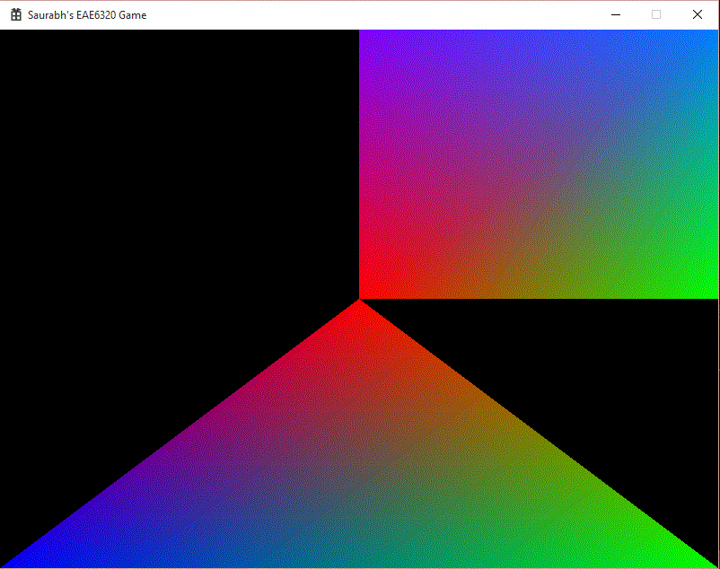
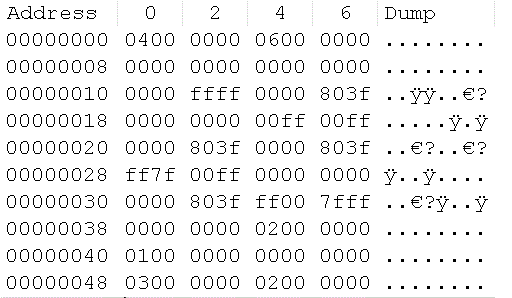

Binary Files
Assignment 06
This assignment we complete the MeshBuilder from the last assignment. The goal was focused on making the task of building meshes efficient. Hence we decided to use binary files. For this some code had to be moved from one project to other. This was not a huge task as the code written was pretty straight forward. Another thing we had to do was to create an effect. An effect encapsulates the data related to the shaders. Similar to the mesh in structure, creating effects was an easy task too. The output for the assignment is displayed to the right. Visually it is the same as last one.

Binary Mesh
As mentioned previously, we aim to make the process of building and loading meshes efficient. Using a binary file instead of a normal text file makes the job a lot more efficient. Some of the advantages of using a binary file are:
- Binary files are easier to read and write through code. It takes time to convert a 32 bit integer to characters. But it takes almost no time to store the same 32 bit integer into a binary format.
- Binary files are smaller. In text files, each character is one byte. But in binary, a large amount of data can be stored in less bytes.
- Binary files can be used as intermediate files. Binary files can be hard to read and comprehend, but they should not be necessarily seen by humans.
A screenshot of the square mesh in the binary format can be seen on the right. The image is from a hex editor. I have experience using hex editors before, so verifying the data inside the binary file was not a great task (compared to the network packets I had to verify in my undergrad!)
The first four bytes (0400 0000) are the number of vertices. Next four bytes (0600 0000) are the number of indices. After that come the list of vertices. Each vertex is 12 bytes. Lastly, the index groups are stored in multiples of 3. The size of the mesh file is 80 bytes in binary format, and 332 bytes in text format.
The number of vertices and indices are before the corresponding data. This is designed this way because, we do not know how many vertices and index groups there are going to be in the file. But we do know for certain the size of each vertex. So, to read all the vertices, we need the start point and the end point of the memory in which the data is stored. The vertex count helps us to calculate the end point of the memory block. If the count of vertices would not be determined earlier, it is not possible to calculate exactly how many bytes to read in order to load the vertex data.

The order I chose, was:
- Number of vertices
- Number of indices
- Vertices
- Indices
One reason for this specific order was to have the data with the finite size before the data with variable size. Vertices before Indices because it was in the same format in the human readable format.
Binary files and Platforms
Every platform must have a version of the binary file. So, the square mesh file for Direct3D will be different than that for the OpenGL. The reasons for that are:
- The primary goal of using binary files is to increase the efficiency in the building and loading of the mesh. They should be able to load "in place" without any processing.
- All the changes to be done to the file should be done before building them, not after during runtime.
- Even though there will be different files, we will not be building the GL mesh file when building for Direct3D. So the number of files will not technically change.
Implementations
Writing to File
- Open File -
fopen_s(&oFile, m_path_target, "wb"); - Write Data -
fwrite(&mVertexCount, sizeof(uint32_t), 1, oFile);
fwrite(&mIndexCount, sizeof(uint32_t), 1, oFile);
fwrite(mVertexData, sizeof(sVertex), mVertexCount, oFile);
fwrite(mIndexData, sizeof(uint32_t), mIndexCount, oFile);
- Close File -
fclose(oFile);
Reading from File
- Open File -
fopen_s(&iFile, i_path, "rb"); - Calculate File Size -
fseek(iFile, 0, SEEK_END);
fileSize = ftell(iFile);
rewind(iFile);
- Read into Buffer -
size_t result = fread(buffer, 1, fileSize, iFile); - Extract Data -
char * iPointer = reinterpret_cast(buffer);
mVertexCount = *reinterpret_cast(iPointer);
iPointer += sizeof(mVertexCount);
mIndexCount = *reinterpret_cast(iPointer);
iPointer += sizeof(mIndexCount);
mVertexData = reinterpret_cast(iPointer);
iPointer += sizeof(sVertex) * mVertexCount;
mIndexData = reinterpret_cast(iPointer);
iPointer += sizeof(uint32_t) * mIndexCount;
- Close File -
fclose(iFile);
Effect Class
The effect class encapsulates the shaders used in Direct3D and OpenGL. The purpose of doing this is with the final goal to make Graphics.cpp platform independent. After moving the code into the class, the Graphics.cpp files are now starting to look more similar. With some future changes, they can be combined into one platform independent file. I guess the final requirement is also true. It feels great having to change code to make it simpler yet so much complex with a lot of functionality.
Implementations
- Creating new Effect -
s_effect = new Effect(); - Initializing the effect - This will have the file name in the future assignment just like the mesh.
s_effect->Initialize(context); - Binding the effect - This function is written in the draw function just before the meshes are drawn.
s_effect->Bind(context);
Time Estimate
Reading: 0.5 hours
Coding: 2 hours
Debugging: 0.5 hours
Writeup: 1 hour
Download Links
Download Direct3D
Download OpenGL